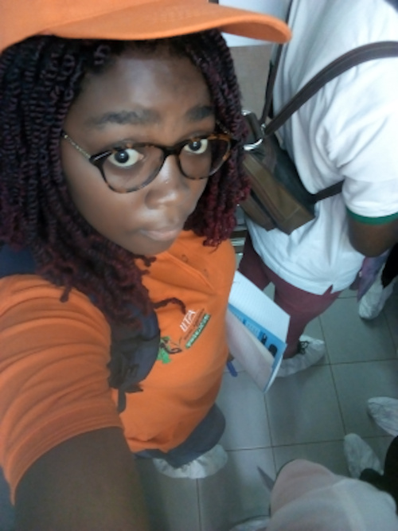

My ENABLE Youth Cameroon experience
Hi! soon I will gist you my adventures and little life experience. Be ready to laugh, cry or feel my feels...

Published by Julia Yossa on 19th Jan. 2020
Hi! soon I will gist you my adventures and little life experience. Be ready to laugh, cry or feel my feels...

I had my first formal job at 16 years old, I worked for Terre et developpement, an NGO specialised in environmental development as rural plannificator. We spend 3 months in Banka community, west region of Cameroon collecting information using specific tools in villages. It was an enriching experience, I came to discover many aspects of village life and the challenges faced by the rural population. Team work and empathy was what I took from the most.
The next job I had was a teaching job at King Solomon Anglo-Saxon
section Ndi Samba, a private secondary school.
I though physics and computer science to first cycle students.
Enriching experience which lasted a trimester, it taught me a great deal of
patience, planning and tolerance.
After that, I had a part time surveyor
job at Cible etudes et conseils. We had to survey customers of goods and
services some companies offered.
I worked on a total of 3 projects.
Presently, i am an assistant project manager for a company with deals with
electricity and renawable energy. This is the most challenging job i have had, it is
the installation of a solar power off-grid system.
My task is to acquire materials and equipments, organise their transport to the working area,
keep track of financial details, check the work done by the technitians, report urgent situations to
the manager and most importantly, i had to mind only my business and not step into the technicians job.
My boss and some friends say i am a "miss know all", so i really have to stick with my job and mine alone.
Generally, when i see something that i know how to do undone, i do it.
All though i was managing my way trhough life, i didn't loose my objective from sight; create my own company and have a positive impact in my community
I have been a volunteer at Le Petit prince et le Moabi in 2018, an association which acts toward the protection of mentally disabled children in Yaoundé. They conduct holiday camps during which they offers french sign laguage training, bead jewelry training, kitchen workshops, theatre workshops, music workshops and many other activities to display the talents of kids both normal and different. My task was to take care of children, assiste animators and animate during breaks. It was a splendid experience, i had the opportunity to know more about mentally deficient kids, learn basic french sign language, take care of smaller ones and i learned theatre with some role play.
Also, i have been a volunteer for the Ministry of Youth and civic education during the national launche of the Yout conneckt plateform. My appointment was at the reception and orientation department. We welcomed participants, registered them, directed them to the halls and exposition venues. At the end of the day, we assisted the cleaning team in picking pappers. It was an enriching experience, i felt the sense of serving my country and adding my little stone to the edifice.
I am interested in volunteering for other institutions and events. currently registered to 2 associations and patiently waiting for activities i wil be needed at.